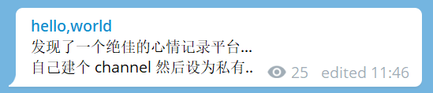
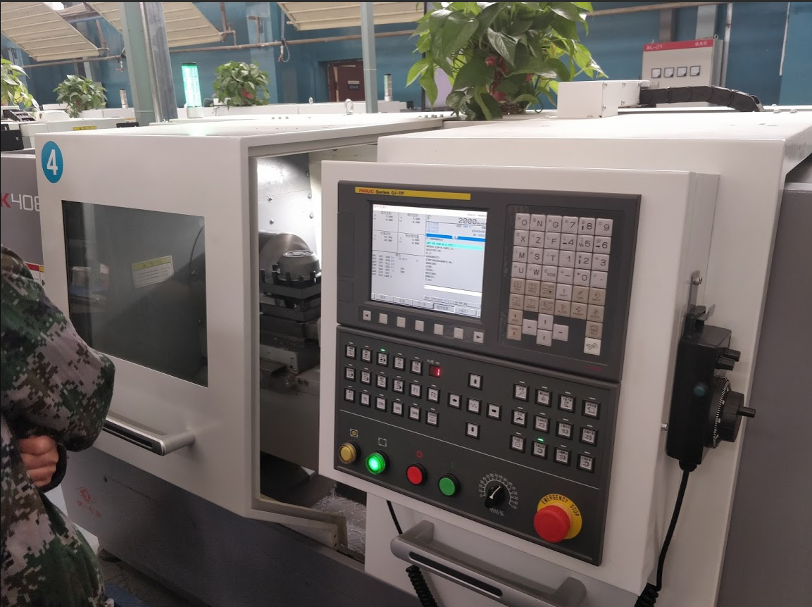
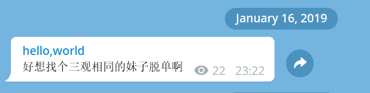
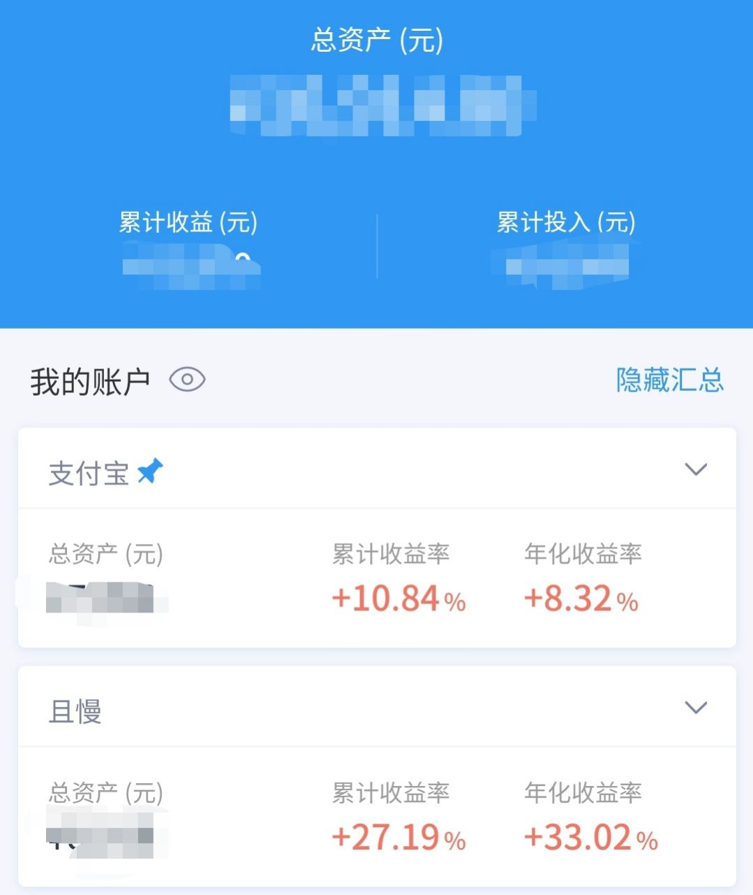
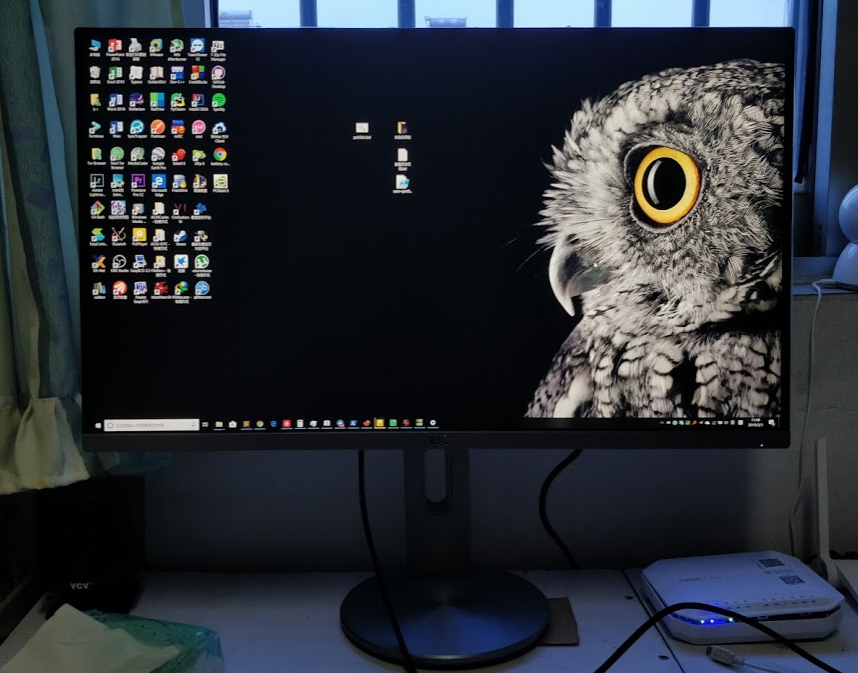
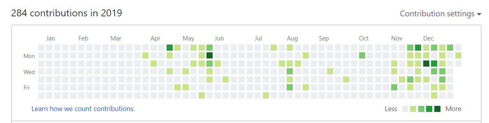

- 总结
又是一年一度的年终总结时间了，进入二十一世纪的第二个十年，我的心情十分激动……
好吧，激动是假的。时空是连续的，进入2020和平常的一天没有任何区别。转眼间已经来到了庚子鼠年的大年初八，我恍然记得我的年终总结还没有写，于是准备把这个传统艺能发扬下去，也看一看2019定的目标完成了多少。
2019 总结
时间及事件依据：印象笔记、Google 相册、我的记忆、Telegram。
事件尽量归类，未归类的大致以时间顺序排列。
-
找到了一个~~记录生活~~吐槽的平台。

这个channel的内容输入延续至今。
-
一月，金工实习和数学建模美赛，虽然没学到什么，还是挺有意思的。

图为某数控机床。
-
三月上旬，重新开始在印象笔记写日记。三月末更换至纸质方式。
之后觉得日记意义不大，更换为每日计划，但是没有坚持。
-
三月，在外租房居住。
-
三月和十二月，分别安排了我校ACM的校赛和新生赛。
-

请记住我这句话，都是泪。
-
寒假里把N1刷了一遍OMV，但存储只有一个U盘。暑假刷回了无灯的固件，买了个硬盘盒+320G机械，勉强能当NAS来用。
-
Ingress，从入坑到弃坑，大概是二月到五月的事。~~（其实以前玩过~~
因为这个游戏还出去玩了挺多次的。
-
三月末，开始入坑Arch Linux。
然后发现这是个巨坑。（折腾万岁
-
投资方面。
-
和去年没多大变化吧。看的还是那两个人，还是没有系统地学经济学。只不过跟着大盘走盈利了一些罢了。

-
-
英语方面。自我感觉英语能力有了较大提升。
-
年度英美刷剧（和去年总结对比了一下）：Friends二刷，The Newsroom，Person of Interest 两季，The IT Crowd一季多。
-
十月份想去考一考托福，大概也学了一段时间，后来无限期搁置了。
-
用Kindle读原著方面，把三体一看完了，又开了个哈利波特的坑，也看完了第一部。
-
-
我看了多少书？
- 买了好多书。~~（然而都没有看~~
- Linux&Unix大学教程基本看完了。后来又买了本鸟哥的，还没看。
- Head First with HTML&CSS 还剩最后两章没看。
- Computer Networking: A Top-down Approach，18年7月在图书馆里借了第五版影印版，一年基本没看，大三上由于要学计算机网络，好歹看了点，后又从淘宝打印了第七版英文版，看了三分之二左右。
-
四月初，启用了Digital Wellbeing，但是并没有起到限制玩手机时间的作用。
-
四月末，参加了一次西安GDG活动。
-
剁手记录。
- 二月初，给家中置换了一个新的显示器，淘汰了老AOC 21' 1680*1050 服役十二年的历史。

图为 AOC 27' 4K 某型号。
- 二月，给笔记本加了根8G的内存。年末的时候这个价钱可以买到16G的。
-
四月末，出售 Bose Sleepbuds。
-
八月末，入手人生中第一台相机，Sony α7m2，带28-70镜头。于是周末又有很多次出去拍照。
- 本年度还是没有换笔记本。
- 十月末，在宿舍购置了显示器，同样是AOC（因为便宜），27' 2K 带Type-C接口。
- 双十一期间，购置了东芝RC500 500G固态。
-
陆续参加了天文协会的几次活动。知识竞赛，航天厂科普，石门山野观。
-
大三上开学初，想加入一个实验室，后未果。
-
整个一年曾多次试图维护QOJ项目，未果。
-
我学了些什么？
- 五月，参加了微信小程序开发大赛。学了一点JS。
- 七月初，软通实训。快乐划水半个月。学了点前端，学了点HTTP。
- 暑假里，学了点前端（HTML+CSS），帮我爸写了个小软件。
- 暑假及大三上的前半学期，在Coursera学完了吴恩达机器学习课。
- 同样在Coursera，Learning how to learn 看了一年了还没看完。
- 七月末，开始学Vue。
- 九月开始，做一个访客认证的项目，学了些认证相关的协议。
- 十一月，学了一点正则。
- 十一月中旬，学了一点AutoHotkey，自己写了一个简单的脚本，用着还挺舒服的。
- 十二月，因软件测试的课程作业学了一点CI/CD和Github Actions。
-
我写了多少代码？

- 五月，微信小程序，一个相册。
- 十一月开始，作为项目管理课程的大作业，也是我希望我校有的，和同学写了个西大云盘。Vue+Django。
- 十一月，Python 课程作业，用Tkinter写了个小软件，调用了一下Bing Map的API显示了个地图。
- 十一月末，根据TUNA群的经验写了个zaobot。
-
记账。这个习惯保持下来了，不过从Excel转移到了Spendee。有好处也有坏处吧。
-
系统上，从Windows到Win+Arch双系统到Windows+WSL，折腾了很多，却感觉没有深入多少东西。
重装了好多次系统.. 一开始换专业版重装了一次，换硬盘又重装了一次。配置环境什么就很麻烦。
-
入门了维基百科的一些原则及基础的编辑方式。但离一个合格的编辑还很远。
-
国庆借舍友的Switch打了七天的塞尔达，Switch好感+++
去年的年初计划
大部分都实现了。
2020 年初计划
- 参与一个开源项目。
- 找一个实习。
- 考研。
- 继续寻找方向。
- 多写一些博客，输出自己的知识，同时也提高自己的能力。